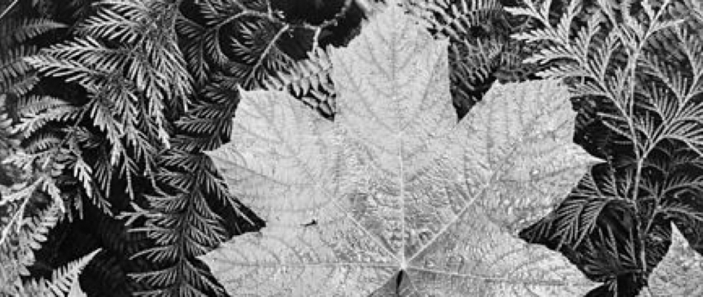

Current Photographer #1: Paul Nicklen
Learn more about Paul Nicklen, the BBC Photographer of the Year!

History #1: Ansel Adams
Learn more Ansel Adams, an infamous landscape Photographer who contributed to new methods of photo manipulation.
Tutorial #1: Lighting
Learn how lighting can have an affect to the mood and tone of an image and use it effecttively to make a more dramatic image.